Git Repository Setup & Development Workflow for Windows
(Using GitLabs, Git Extensions & HTTPS)
📚 Table of Contents
Applications Overview
| Application |
Purpose |
| Git for Windows |
Backend Git System |
| Git Extensions |
Graphical Git UI |
| VS Code |
Code editing + Git Integration |
| Git Credential Manager |
Secure token handling (installed with Git) |
Installations
Install all applications below in order to configure a development environment similar to mine.
Install VS Code
-
Download from https://code.visualstudio.com
-
Click VSCodeUserSetup application to open and start download

-
Once open, click I accept the agreement then Next

-
Select a destination location then Next

-
Click Next to continue setup

-
Make sure all boxes are checked, then click Next

-
Make sure everything is correct then click Install


-
To finish installation click Finish

Install Git for Windows
Download Installation File
-
Go to git-scm.com and download the latest Windows installer.
-
Double-click the downloaded .exe file to launch the setup wizard.
Install using the Setup Wizard
-
Follow Installation Steps (Recommended Defaults):
-
Click Yes if a User Account Control prompt appears.
- Note: This action may require administrator access. If you are not the administrator of your machine, you will have to get administrator approval. Typically, this means an admin will have to enter their credentials into a prompt that appears.

-
Click Next.

-
Accept default install path or specify a location. Click Next to proceed.
- If you do not use the default path, other applications may struggle to locate Git Extensions. Record the custom path to configure companion applications in the future.

-
Select the following Components. Click Next when done.

-
Click Next to continue.

-
Choose Visual Studio Code as your preferred editor.

-
Select Override the default branch name for new repositories and ensure the specified name is main. Click Next to continue.

-
Select Git from the command line and also from 3rd-party software the click Next.

-
Select Use bundled OpenSSH and click Next.

-
Select Use the native Windows Secure Channel library and click Next.

-
Select Checkout Windows-style, commit Unix-style line endings. This helps ensure compatibility across both Windows and Unix Based Systems. Click Next to continue.

-
Select Use MinTTY (the default terminal of MSYS2). Click Next to continue.

-
Select Fast-forward or merge. Click Next to continue.

-
Select Git Credential Manager. Click Next to continue.

-
Ensure both Enable file system caching and Enable symbolic links is selected. Click Next to continue.

-
When installation is complete, ensure Launch Git Bash is selected and View Release Notes is deselected. Next, click Finish.
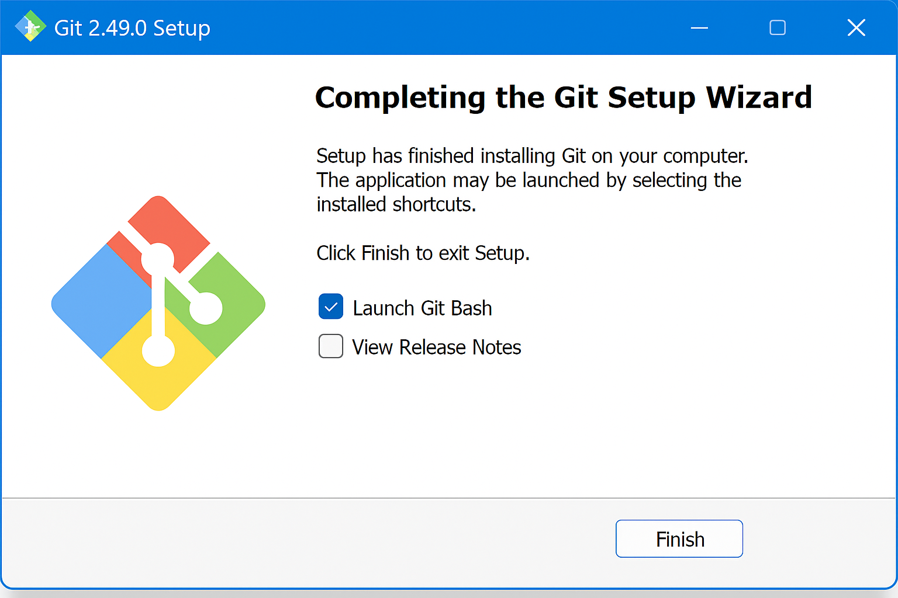
Install Git Extensions
Download Installation File
-
Go to gitextensions.github.io to download Git Extensions.
-
Click the blue Download button.

-
On the GitHub Releases page, download only the GitExtensions-x64-<Version>.msi file.

Install using the Setup Wizard
-
Click Next.

-
Select Install for all users. Click Next.

-
Accept default install path or specify a location. Click Next to proceed.
- If you do not use the default path, other applications may struggle to locate Git Extensions. Record the custom path to configure companion applications in the future.

-
Click Next.

-
Deselect telemetry if preferred.

-
Click Install.

-
Click Yes if a User Account Control prompt appears.
- Note: This action may require administrator access. If you are not the administrator of your machine, you will have to get administrator approval. Typically, this means an admin will have to enter their credentials into a prompt that appears.

-
When installation is complete click Finish.

-
When opening for the first time, you'll be prompted to install .NET
a. Click Download it now

b. You will be taken to the .NET Installer (it should download automatically but if it does not then click the click here to download manually link)

c. Go to the location of your download (ex: downloads, documents, etc. ) in your File Explorer then double click on the runtime application to start the installation

d. When prompted, click Install

Install GitLabs
- Create a GitLabs account.
Unfortunately, my account was created over a year ago and I don't remember the process. Its also not possible for me to create a new account in order to document the process. Follow GitLab's official documentation instead.
Configurations
- Enter the following commands into Git BASH
- Automatically Set Upstream for New Branches
git config --global push.autoSetupRemote true
- This ensures Git uses the Windows Credential Manager to save your GitLab login info.
git config --global credential.helper manager-core
This saves your login email to ensure that git knows who you are.
git config --global user.email "you@example.com"
This saves your login name to ensure that git knows who you are.
git config --global user.name "Your Name"
- Close Git Bash, you won’t need it again.
Creating a Personal Access Token (PAT) on GitLab
- Go to Aegis' GitLab and sign in.
AEGIS Gitlab Link
→ Click your User icon > Preferences > Access Tokens
-
Fill out:
- Name:
GitExtensions or something memorable
- Scopes:
read_repository, write_repository
- (Optional) Set an expiration date
Setting an expiration date means this token will no longer work after that date. After this date, you will have to create a new token and reconfigure software that depended on this token for managing remote repos. Only set an expiration date if you have a very good reason to.
-
Click Create personal access token
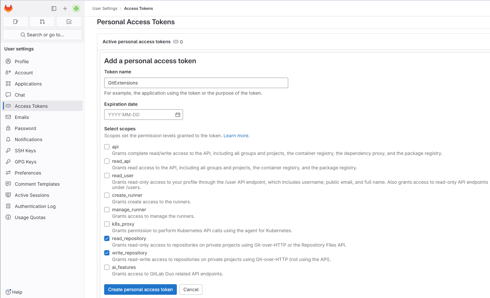
-
Copy the token now, you won’t see it again. I recommend saving this to a .txt file somewhere on your computer where you can find it later.
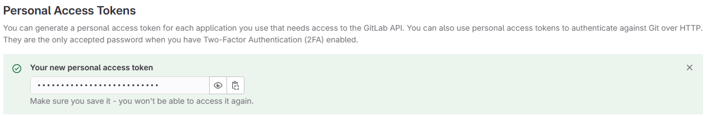
-
Launch Git Extensions. When launching for the first time, you will be asked to select an language. Select English by clicking on the UK Flag
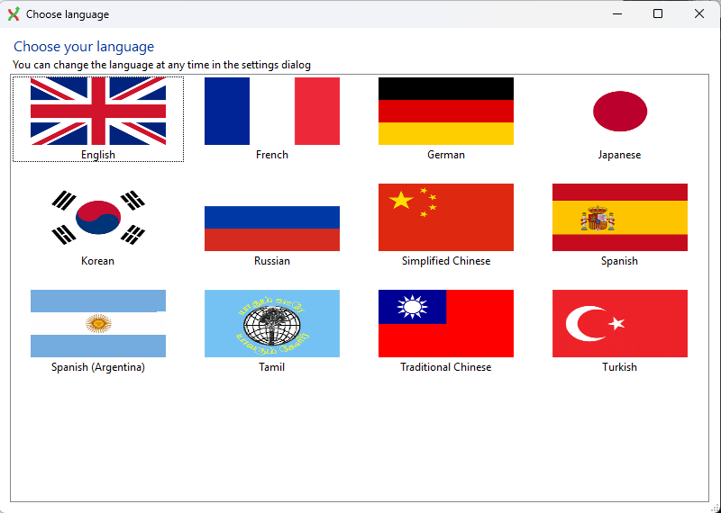
-
A dialog box asking for permission to collect telemetry data will appear. Click No to disable telemetry.
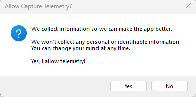
-
Within Git Extensions → Tools > Settings > Git > Config
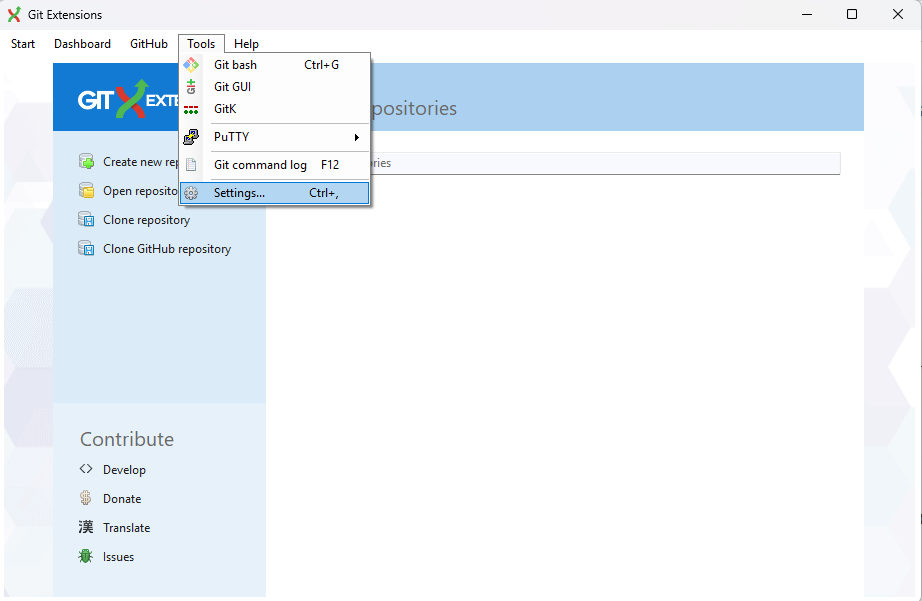
-
Set your identity:
- User Name:
csavugot
- Email:
csavugot@aegispower.com
- USER:
csavugot

- Click Apply
This ensures your commits are linked to your GitLab identity.
Open Local Directory in VS Code
-
Once VS Code opens, click the x (boxed in yellow) to close out the welcome tab, if it opened automatically,

-
Click File in the top left corner, then Open Folder

-
Navigate to the folder that you want to open in File Explorer
-
On the Trust Authors page click the check box thenYes, I trust the authors (both boxed in yellow)

Setup Git Source Control Within VS Code
We have to configure source control for VS Code separately from Git Bash and Git Extensions.
-
Open TERMINAL by pressing Ctrl + ` followed by clicking TERMINAL on the bottom banner that opens
-
Enter the commands found in Configure Git, this time into PS (Powershell) instead of Git Bash
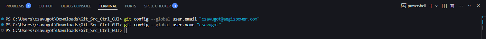
Show how to always display hidden files in File Explorer
- Open File Explorer:
- Click
View > Show > Hidden items
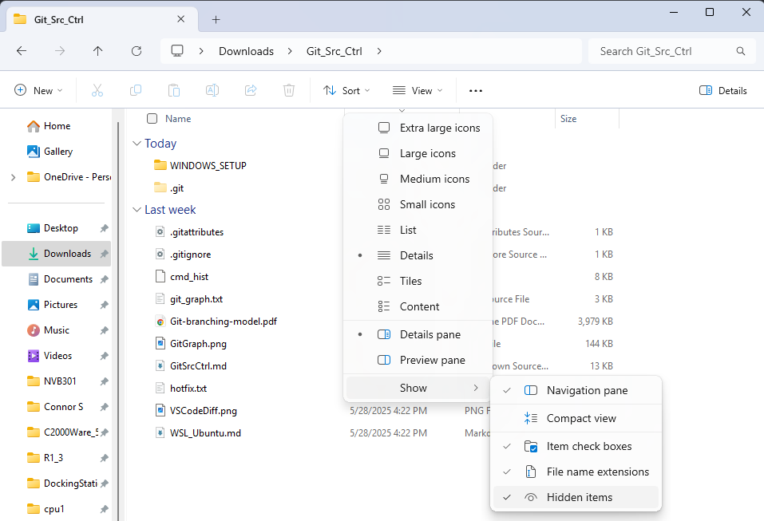
Introduction to GitLabs/Git Extensions
To introduce new users to GitLabs and Git Extensions, follow the steps below before trying to create or manage your own repository. I advise that you add only a few sample files to this test repo, all of which have been backed up elsewhere, just as a precaution.
Create Remote Repository in GitLabs
-
Log in to AEGIS Gitlab using the GitLab account you created earlier.
-
Within GitLab, navigate to the Projects tab on the left sidebar (boxed in yellow)

-
To make a blank project, click the Create blank project button (boxed in yellow)

-
You will be taken to a page to create the blank project
a. Fill in the project name and URL boxes (boxed in purple)
b. Choose visibility level (boxed in green)
c. Check the Initialize repository with a README box (boxed in yellow)
d. To finish creating your blank project click Create project button (boxed in orange)

-
Your project is now ready to use

-
Copy the HTTPS URL and paste it into notepad or somewhere else you can find it again later.
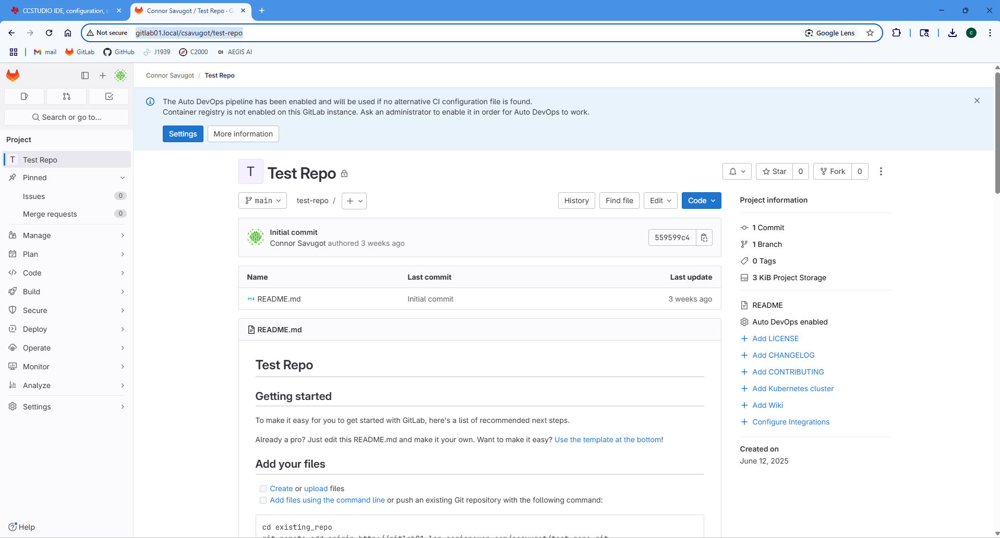
General Syntax:
http://gitlab01.local/username/project-name
My Example:
http://gitlab01.local/csavugot/GitSrcCtrl_GUI
This URL will be used later to clone the remote repo to our local computer
WARNING
The URL provided when using Code → Clone with HTTPS → Copy URL is incorrect.
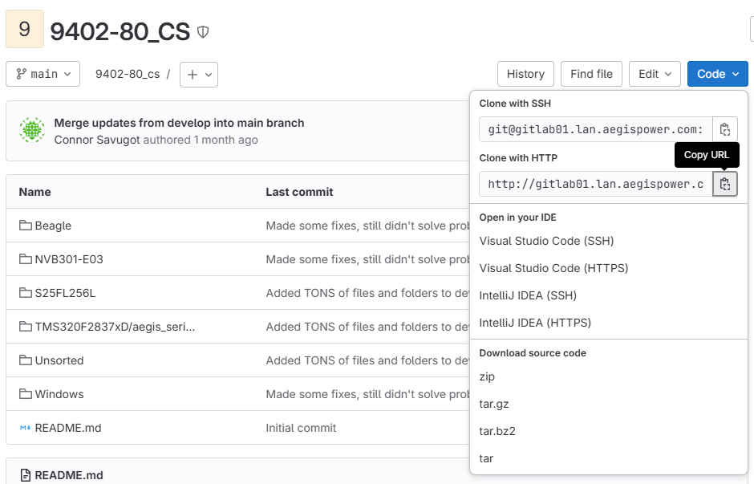
If the copied URL contains lan (e.g., http://gitlab01.lan.aegispower.com/csavugot/9402-80_cs.git), do not use it.
This is a known GitLab configuration issue, and it's unlikely to be fixed soon.
Instead, follow Step 6 above to copy the correct URL.
Clone Remote Repository in Git Extensions
-
Open Git Extensions
-
In the left-hand sidebar, click Clone repository
-
In the Clone dialog:
- Repository to clone: paste your GitLab HTTPS URL
(e.g., http://gitlab01.local/username/project-name)
Note, although typically you can copy the Clone with HTTP URL found by clicking the blue Code button in a remote gitlab repository, this URL does NOT work at AEGIS. We're really not sure why...
- Destination: choose where to save the local copy
-
Click Clone
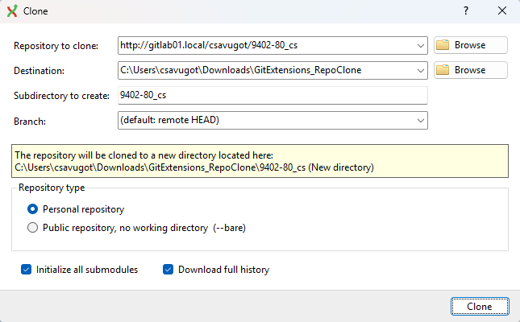
- (Initial Setup Only) The first time you perform Git actions like clone, pull, or push, Git Credential Manager will prompt you for credentials:
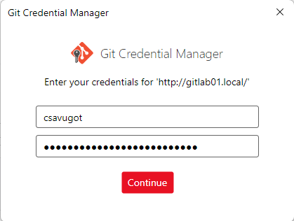
- Username: your GitLab username or email
- Password: your Personal Access Token (PAT)
Git will save these securely via Windows Credential Manager.
-
Uncheck the Keep dialog open box. If the popup box doesn't close automatically after the process is complete, click 'OK' after the Clone process is complete.
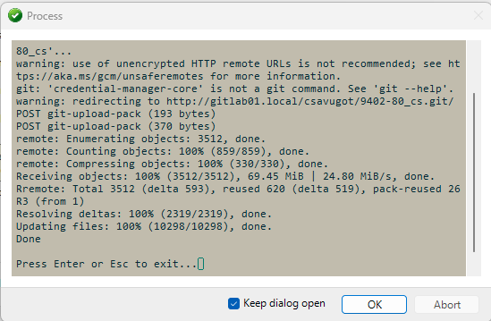
-
Dialog box says cloned successfully, would you like to open repository? Click yes.
Edit Repository with VS Code
-
See Open Local Directory in VS Code to open the repo in VS Code
-
Create a new file called new.md by clicking the New File... icon in the explorer left sidebar
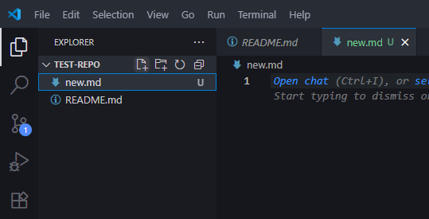
-
Paste in the following or add your own contents to the markdown file.
# New File
## Purpose
We are creating this file so that we have new changes to push to the remote repo.
## Creation Details
Creating this file is part of the tutorial `Introduction to GitLab/Git Extensions` that will be used to teach users basic GUI actions within GitLabs, Git Extensions, and VS Code.
- Save the File by pressing
Ctrl + s
Commit & Push to Remote Repository with Git Extensions
-
Within Git Extensions, press the purple Commit button found on the ribbon.
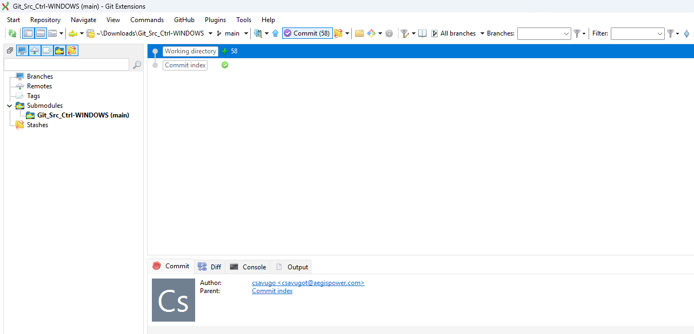
-
Stage all changed by pressing the purple multi-down-arrow icon highlighted below.
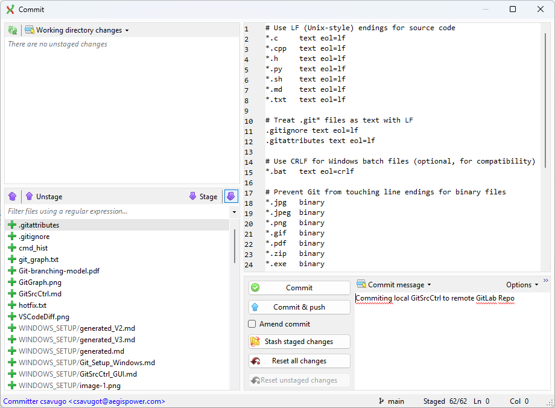
-
After adding a Commit message to the dialog box, click Commit & push.
Renaming a Repository in GitLab
Changing the repository name and URL in GitLab involves a few steps: updating the repository name in the GitLab web interface, and then updating your local Git repository’s remote URL to match. Here’s a step-by-step guide:
Step 1: Change the Repository Name in GitLab
-
Log in to GitLab and go to the project page of the repository you want to rename.
-
In the left sidebar, click Settings > General.
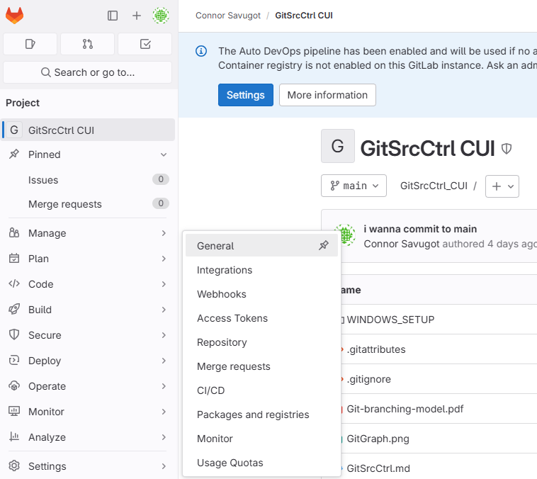
-
Expand the Naming, topics, avatar section and update the Project name
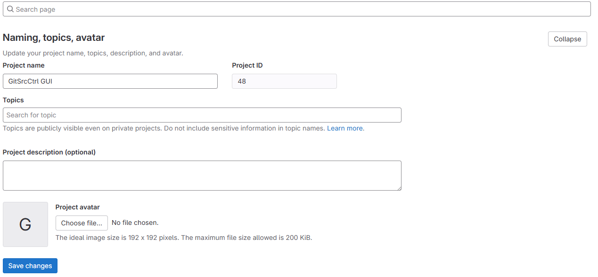
-
Click the blue Save changes button
-
Expand the Advanced section.
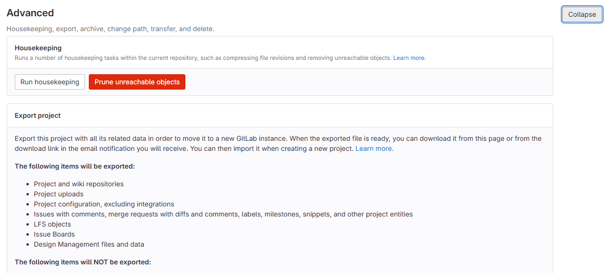
-
Update the Path directory within the Change path section to match new name
Project name: GitSrcCtrl GUI
Path: GitSrcCtrl_GUI
Note: If any space characters were used within Project name, replace with _ here.
-
Click the red Change path button to confirm changes.
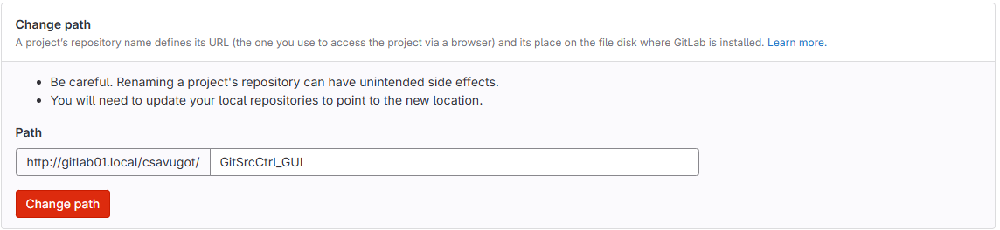
Step 2: Update the Remote URL in Git Extensions
After renaming your repository in GitLab, follow these steps to update the remote URL using Git Extensions:
-
Open Git Extensions and navigate to your local repository by selecting Repository > Open.
-
In the top menu, click Repository > Remote repositories.
-
A window titled Remote repositories will appear, listing the current remotes. Select the correct remote repository (In most cases, there will only be one.)
-
Update the Name and Url details to match the Project name and
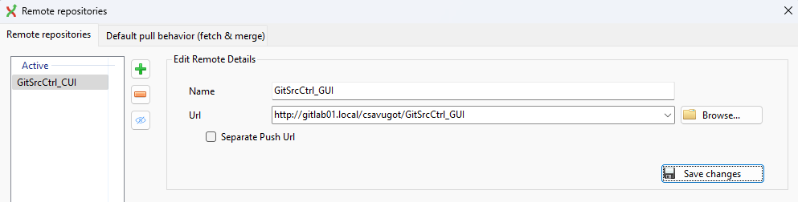
-
Click Save (or OK) to apply the changes.

-
(Optional) Verify the change:
- Go to Repository > Remote repositories again.
- Confirm that the URL listed matches your new GitLab repository URL.
General Git GUI Commands
This section contains instructions to complete many essential actions used throughout the development cycle. A list of the commands covered is shown below:
Create Local Repository
Creating a Local Repository from Existing Code & Push to Remote (First-Time Upload)
This is only for local directories that haven't been initialized as local repositories.
This means they do not contain the .git folder.
.git may be hidden depending on file explorer settings. See Configure File Explorer for more info.
-
First, create the remote repository in GitLab by following instructions here. Remember to copy the URL.
-
Within Git Extensions, on the left-hand sidebar, click Create new repository
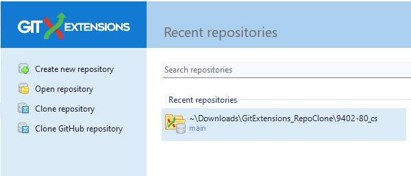
-
Click Browse to locate and select local directory you wish to initialize as a local repository. Ensure Repository type is set to Personal repository and click Create
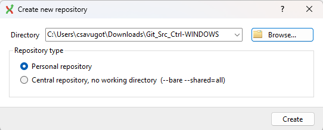
-
You should see a message similar to the following if Git Extensions was able to successfully initialize a new repository in the specified location. Click OK to continue.
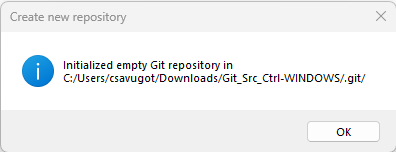
-
In the left-hand sidebar, right-click Remotes, then click manage
-
Fill out the Create New Remote section. Use the URL you copied from GitLab earlier.
- Name: GitSrcCtrl_GUI
- Url: http://gitlab01.local/csavugot/GitSrcCtrl_GUI
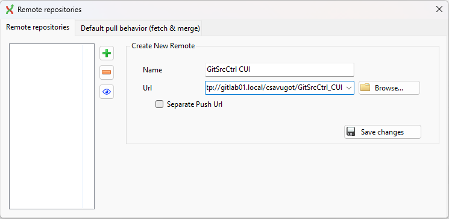
Note: The name MUST be the one specified in the URL, which cannot include spaces. This may be different than the name you see on the GitLab website UI
-
If you receive the following message, Git was able to locate your Remote Repository. Click Yes followed by OK to continue.
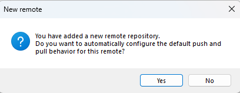
-
Close the Remote repositories pop-up box by pressing the x in the top right corner.
-
Commit the changes to the remote repository. For details, see Commit & Push to Remote Repository with Git Extensions
Clone Remote Repo
-
For help cloning a remote repo, see Clone Remote Repository in Git Extensions
-
After cloning, it is important to pull all remote branches to ensure they're created locally, if the repository contains branches other than main. See Pull All Remote Branches to Local Repo for more details.
Pull All Remote Branches to Local Repo
Useful
Using Git Bash:
-
Open Git Bash
-
Navigate to the local directory where the Remote Repo has been cloned. In my case:
cd /c/Users/csavugot/Downloads/APBDC-E01/apbdc-e01
Within Git Bash, this is the general syntax to reach a User's Windows Downloads Directory
cd /c/Users/<YourWindowsUsername>/Downloads
Note that in windows the C drive is denoted as C:\, in git bash the C drive is denoted as /c/
- Enter the following command
git fetch --all --prune
for remote in $(git branch -r | grep -v '/HEAD'); do
local=${remote#origin/}
git branch --track "$local" "$remote" 2>/dev/null
done
- Refresh Git Extensions by pressing
F5 to confirm it worked. You should soo all of the Remote Branches now exist locally
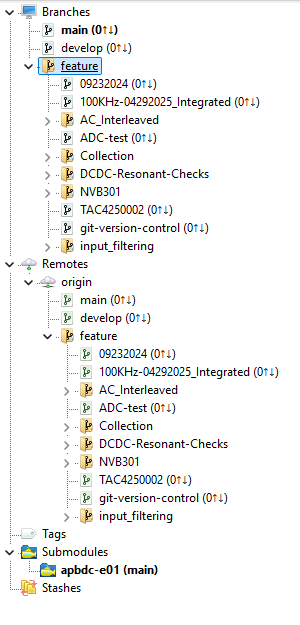
Open Local Repository
On Git Extensions
-
On the left-hand sidebar, click Open repository to open a repository.
-
Click Browse... to select a file directory that has been initialized as a repository. Next, click Open
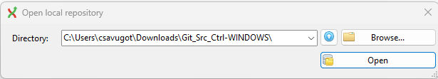
The file directory must include the .git folder, which is how you can confirm it is an initialized repo.
.git may be hidden depending on file explorer settings. See File Explorer Configuration for more info.
Open in VS Code
- On VS Code, just open it as you would any other local directory. See Open Local Directory in VS Code for more information. VS Code automatically locates the .git folder (if it exists) and opens the repository within the source control section on the left side-bar.
Create Branch
New branch is based on local Directory, not remote branch
-
These instructions you have already have a repository open in Git Extensions. For more details, see Open Local Repository
-
On the Ribbon, Click Commands > Create branch...
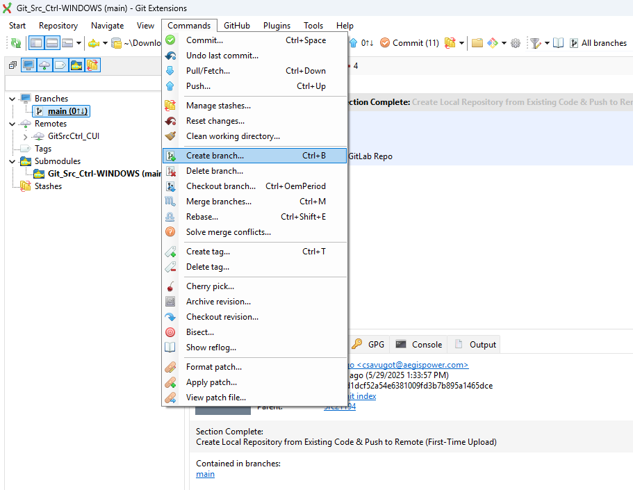
-
Enter branch name, ensure the following options are selected, and click Create branch
- Select
Checkout after create
- Deselect
Create orphan
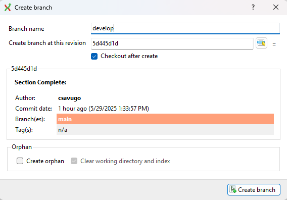
-
Click OK
-
Push to Remote. For Details, see Push to Remote
-
To make this prompt disappear, uncheck the Keep dialog open box
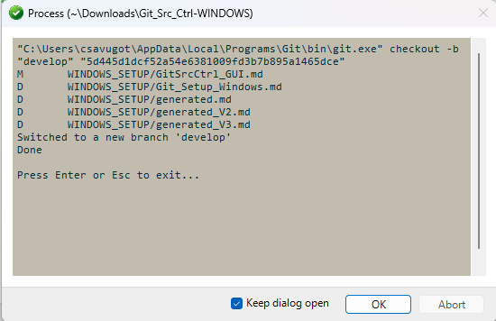
Checkout Branch
Branch checkout selects an active branch. This is the branch all of your changes will be applied to.
BEFORE Checking out branch, commit all changes to current branch so that there are no conflicts.
-
Double Click on the Branch you wish to Checkout from the Branches in the left-hand sidebar
-
If there are conflicts, the following pop-up will appear given you access to many different solutions.
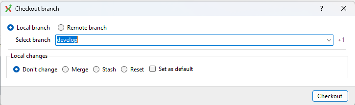
Create Tag
Tags are used to mark official versions released to the public. Follow the instructions below to create one. Release Tags will only be given to commits on the main branch.
See Versioning Convention and Tagging Convention for more details.
-
Right-Click on the most recent commit to main then click Create new tag here...
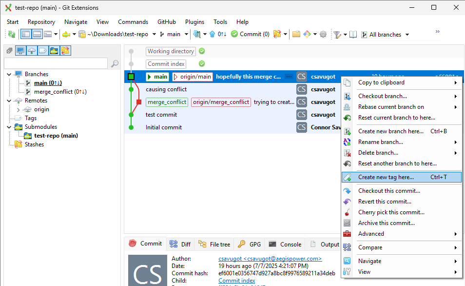
-
Add a tag name, see Versioning Convention for more details.
-
Select Push tag to 'origin'
-
Select Annotated tag from the drop-down menu
-
Add a Descriptive Tag Message.
General Format:
Release vx.y.z – Short Tag Description
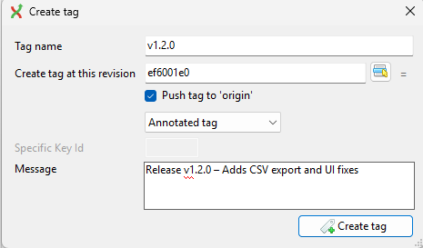
-
Click Create tag
Merge Branch
-
Checkout the branch you wish to merge into (target branch). For more details, see Checkout Branch
-
Click Commands > Merge Branches...
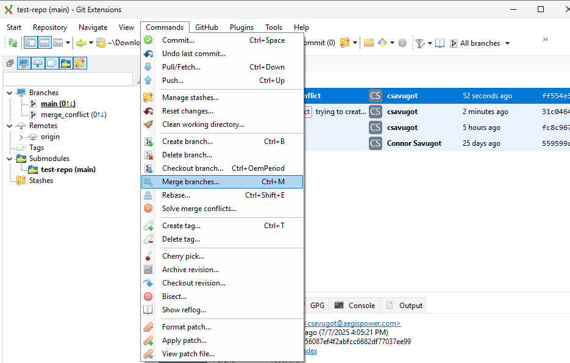
-
Select the branch you wish to merge from (source branch).
-
Ensure all other selections match the screenshot below.
a. Click Always create a new merge commit
b. Select Show advanced options
c. Select Specify merge message
d. Enter a merge message
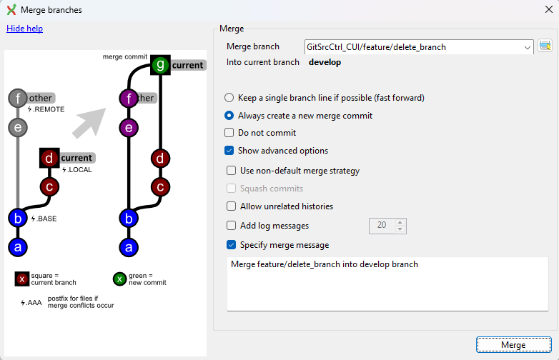
-
Click Merge
Manage Merge Conflicts
Use Git Extensions to start Merge
-
Start the merge by following the Merge Branch instructions
-
VS Code should open immediately. If it does not, select the option to open merge conflicts in editor.
-
Click Resolve in Merge Editor
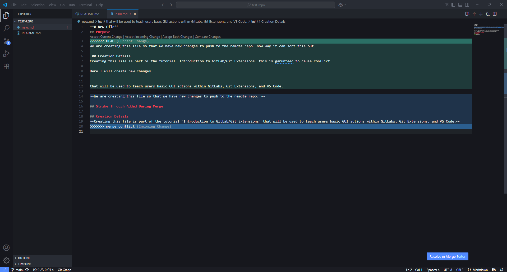
-
Use the resolution buttons provided in the editor:
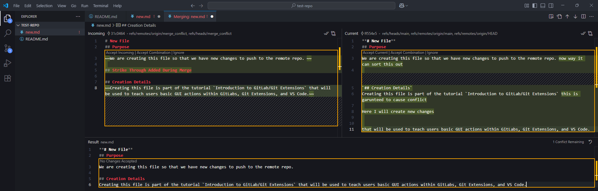
- Accept Current Change – Keeps the version from your current branch (
HEAD).
- Accept Incoming Change – Uses the version from the branch you're merging in.
- Accept Both Changes – Keeps both versions, stacked one after the other.
- Compare Changes – Opens a side-by-side diff view to help you decide.
-
Click Complete Merge
-
Commit the merge from either Git Extensions or VS Code. For more info, see Commit & Push to Remote Repository with Git Extensions
Push to Remote
-
Click Commands > Push....

-
After ensuring that all information is correct, press the Push button.
- Ensure the both the branch selected to push from and to is
<CURRENT_BRANCH>
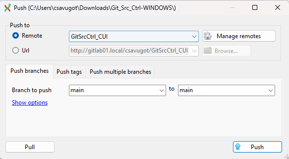
- If more prompts appear, click
Yes followed by Yes followed by OK.
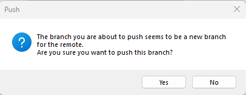
Delete Branch
Step 1: Deleting Local Branch
After merging a feature branch, it's safe to delete the branch.
The full history, including all commits and the merge itself, is preserved in the develop branch.
Deleting the branch only removes the name; it does not erase any commit history.
You cannot delete the branch thats currently checked-out. Checkout a different branch first. For more details, see Checkout Branch
-
Right Click on the Branch you wish to delete within the left-hand sidebar. Click Delete Branch...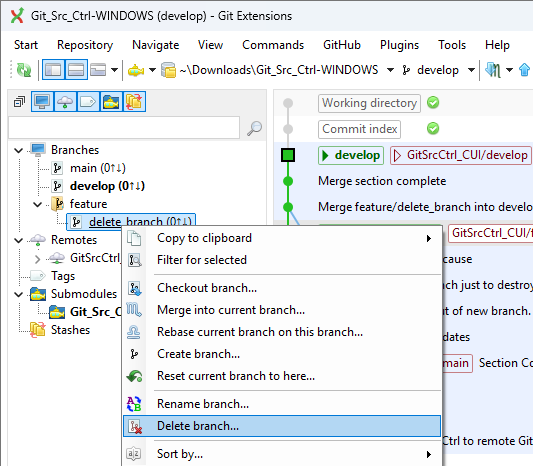
-
Click Delete to confirm branch deletion 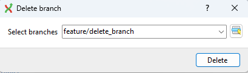
As mentioned, you can see from the Git Graph that although the branch was deleted, its history of existence is preserved. (Light Blue Line)
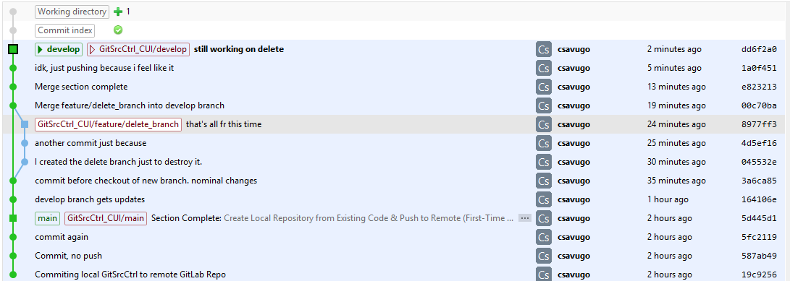
Step 2: Deleting Remote Branch
Note: The instructions below are for deleting a remote branch that has already been deleted locally. If you need to know how to delete a local branch, see Delete Branch
-
Click Commands > Push...
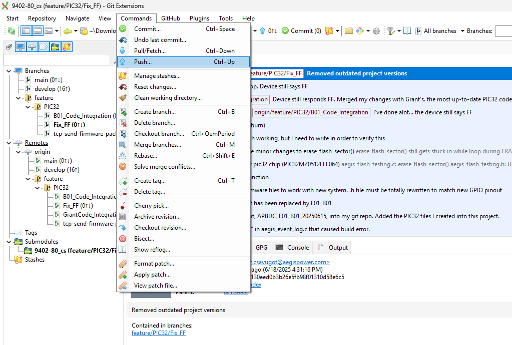
-
Select the Push multiple branches tab.
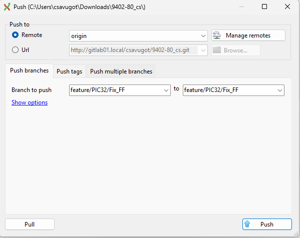
-
Select all branches that don't exist locally.
Branches that don't exist locally will not have a check box under the Push or Force Column.
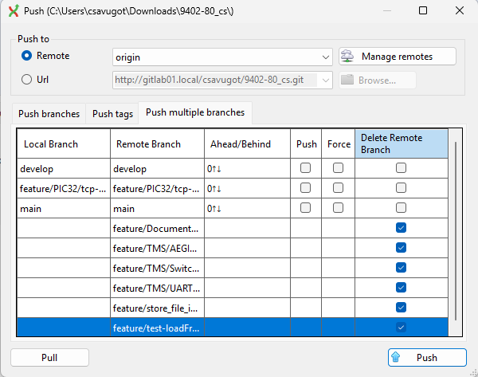
-
Click Push
Diff Compare Branches
-
Right Click on the commit or branch you wish to compare to another branch, then click Compare > Compare to branch...
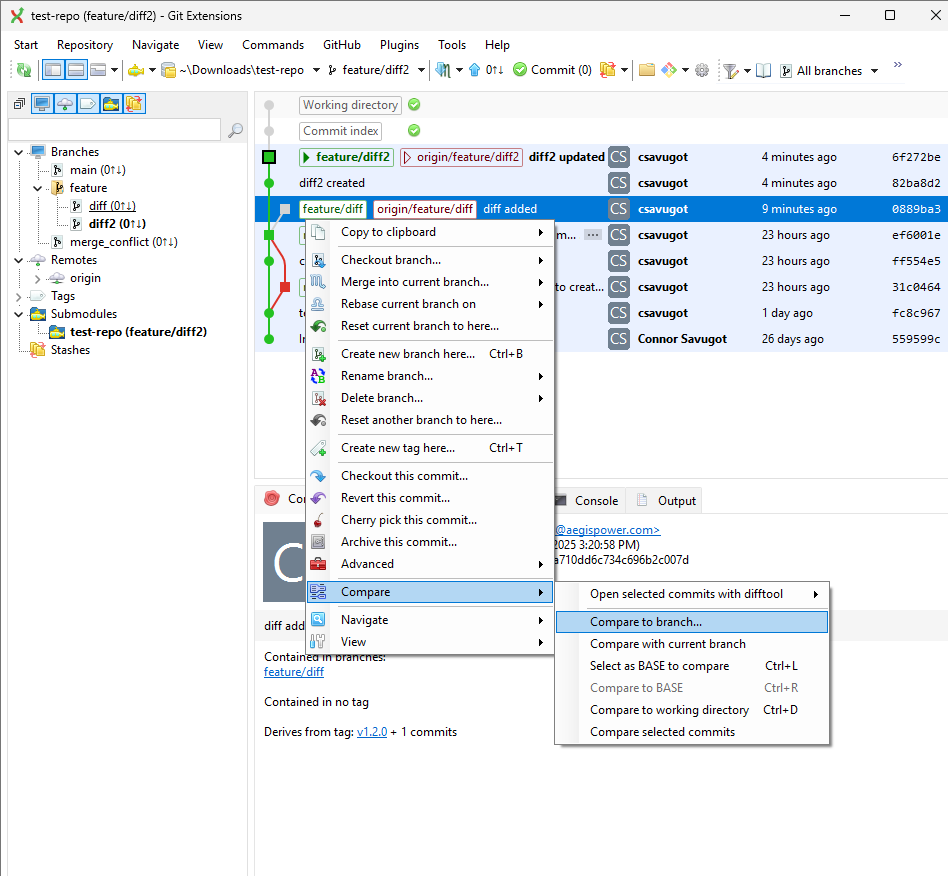
-
Select the remote or local branch you wish to compare to using the buttons and dropdown menu.
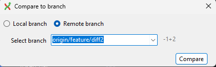
-
For quick comparisons, you can you the built-in git diff tool. Otherwise, press the Open diff using directory diff tool
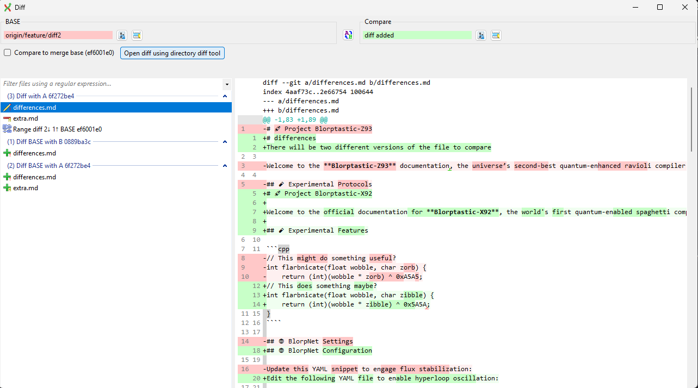
-
More in-depth comparisons can be done in VS Code. Open the side-by-side comparison by following the process below:
a. Find the name of the first file you wish to compare.
b. Right-Click the file name under the Left directory.
c. From the context menu, select Select for Compare.

d. Right-Click the same file name under the Right directory.
e. From the context menu, select Select for Compare.
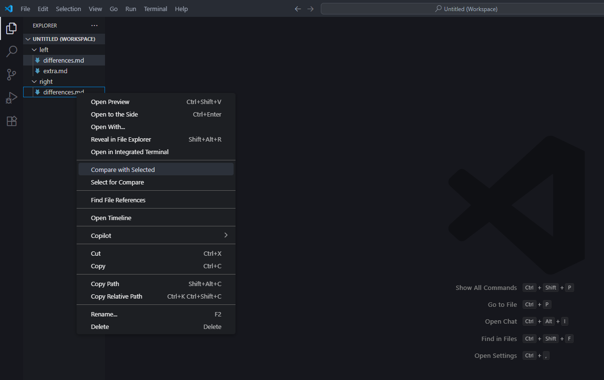
-
This gives to a visual comparison between two branches. If you wish to combine these two branches, especially selecting some , see Merge Branch.
AEGIS Development Workflow
This section lays out our development workflow. This guide makes use of VS Code and Git Extensions, minimizing command-line usage. The image below displays a general protocol that we wish to replicate here at AEGIS.

Git Flow Branch Summary (GUI-Based)
| Branch |
Purpose |
Created From |
Merges Into |
Tag? |
GUI Workflow Summary |
main |
Production-ready, stable code |
release/*, hotfix/* |
— |
Yes |
Default branch. Use Git Extensions Merge with --no-ff. Tag via right-click (e.g., v<version>). |
develop |
Integrates completed features |
main |
release/* |
No |
Create from main. Merge in feature/* or release/* via Git Extensions. |
feature/<name> |
New feature or experiment |
develop |
develop |
No |
Create branch. Commit changes. Merge to develop with --no-ff. Delete after merge. |
hardware/<name> |
Hardware-specific testing or debugging |
develop |
Varies* |
No |
Create from develop. Used for physical hardware validation and bring-up. May be deleted or rebased. |
release/v<version> |
Final polish before release |
develop |
main, develop |
Yes |
Create from develop. Finalize changes. Merge to main, tag (v<version>), then merge to develop. |
hotfix/v<version> |
Urgent fix to production |
main |
main, develop |
Yes |
Create from main. Apply fix. Merge to main and develop, tag, then delete. |
Tip: Always merge with --no-ff to preserve history and branch identity.
--no-ff means no fast-forward.
By selecting Always create a new merge commit when completing a merge, we ensure that fast-forward is disabled.
See Merge Branch for more details.
Branch Naming Conventions
| Branch Type |
Format Example |
Description |
| Feature |
feature/<short-name> |
Use dashes for spaces, e.g., feature/export-csv |
| Hardware |
hardware/<short-name> |
Used for low-level hardware testing, e.g., hardware/spi-timing-check |
| Release |
release/v<version> |
Semantic versioning, e.g., release/v1.2.0 |
| Hotfix |
hotfix/v<version> |
Emergency patch, e.g., hotfix/v1.2.1 |
| Tags |
v<version> |
Use tags on main to mark official release points (e.g., v1.0.0) |
Note: feature/* and hardware/* branches should be short-lived and always branched off develop.
Versioning Convention
To clearly track and identify production-ready releases, we use semantic versioning along with signed Git tags.
All official releases are tagged using the format:
v<version>
Where:
<version> = x.y.z
| Segment |
Meaning |
Trigger for Change |
x |
Major version |
Incompatible or breaking changes (e.g., API rewrite) |
y |
Minor version |
Backward-compatible feature additions |
z |
Hotfix version |
Bug fixes, urgent patches, or small stability updates |
Version Update Rules
Every new release must be tagged with an updated version number, following a consistent and meaningful progression. Version components update as follows:
-
Major (x): Increment for breaking changes or major milestones
Reset y and z to 00
Example: v1.3.2 becomes v2.0.0
-
Minor (y): Increment for backward-compatible feature additions
Reset z to 00, keep x unchanged
Example: v2.4.5 becomes v2.5.0
-
Hotfix (z): Increment for patches, bug fixes, or minor improvements
Keep both x and y unchanged
Example: v2.5.0 becomes v2.5.1
This structured versioning helps communicate the impact of changes, supports clear history tracking, and aligns with Git Flow branching.
Tagging Convention
Tags should always be annotated and signed to ensure authenticity and traceability.
Create a New Release Tag:
To create a new release Tag, see Create Tag
Do not tag directly on a feature/* or develop branch. Tags are only applied to main after a release or hotfix merge.
Tag Examples
| Tag |
Description |
v1.0.0 |
First official release |
v1.1.0 |
Adds a new feature (e.g., new module, screen) |
v1.1.1 |
Fixes a regression or bug |
v2.0.0 |
Introduces breaking changes or refactoring |
release/* branches are named as release/<version>- After merging a release into
main, it is immediately tagged as v<version>
- Hotfixes follow the same process via
hotfix/<version> and also result in a v<version> tag
Tags like v1.0.0, v1.1.0, and v2.0.1 help define and trace each production milestone in your Git history.
main
main is the default branch for production-ready code.
main Branch Creation
The main branch is automatically created when the Git repository is initialized.
See Create Remote Repository and Creating a Local Repository for setup details.
main Branch Management
The main branch is the production-ready branch and should only be updated by merging in release/* or hotfix/* branches.
See Merge Branch for details.
Do NOT commit to main directly.
After a merge, apply a signed release tag to mark the official version.
See Versioning Convention and Tagging Convention for instructions.
The Git Flow diagram refers to this branch as master. We follow the modern naming convention of main.
main Branch Deletion
Do not delete this branch. It serves as the primary record of all stable, production releases.
develop
develop serves as the integration branch for all completed features.
develop Branch Creation
Create the develop branch from main to act as the staging area for completed features.
See Create Branch for detailed steps.
develop Branch Management
All feature/* and release/* branches are merged into develop.
The first release commit does not need to be merged into develop, as it is created from develop without modification.
Subsequent release commits include minor bug fixes that should be merged back into develop.
See Merge Branch and Commit & Push to Remote Repository with Git Extensions for more details.
develop Branch Deletion
The develop branch is long-lived and should NEVER be deleted.
feature/<name>
feature/* branches are used for isolated development of new features or experiments.
feature Branch Creation
Create a new feature/* branch from develop whenever you start work on a new feature, improvement, or experimental idea.
Each feature gets its own uniquely named branch using the format:
feature/<Short-Name>
Use dashes for spaces, e.g., feature/Export-CSV
Examples:
feature/Export-CSVfeature/Login-Flowfeature/Refactor-Header
This keeps feature development isolated and easy to review.
See Create Branch for detailed steps.
feature Branch Management
Work on your feature locally, and regularly commit and push changes to the remote feature branch.
See Commit & Push to Remote Repository with Git Extensions for detailed steps.
When complete, merge it back into develop.
See Merge Branch for more details.
feature Branch Deletion
After merging into develop, the feature/* branch should be deleted to avoid clutter.
Even after deletion, the branch’s history remains visible in Git logs and commit history.
See Delete Branch for more details.
Here’s a new section documenting the hardware/* branch pattern, written in the same tone and structure as your existing feature/* section. This assumes hardware/* branches are used to isolate code changes needed specifically for hardware validation, prototyping, or bring-up.
hardware/<name>
hardware/* branches are used for development tied to physical hardware testing, validation, or prototyping.
This branch type helps prevent low-level testing hacks or quick workarounds from contaminating general development (develop or feature/*).
hardware Branch Creation
Create a new hardware/* branch from develop when beginning a hardware-specific investigation or test.
Each hardware branch should be clearly named based on what is being tested. Use the format:
hardware/<Short-Name>
Use dashes for spaces, e.g., hardware/ADC-test
Examples:
hardware/AC-Interleaved/80kHzhardware/ADC-testhardware/DCDC-Resonant-Checks/115kHz
See Create Branch for detailed steps.
hardware Branch Management
Use these branches to:
- Try out hardware-focused experiments or debug workarounds
- Capture commit history specific to what was tested
- Share testing progress with teammates without cluttering production code
Changes made in a hardware/* branch may or may not be merged back into develop, depending on:
- Whether the test yielded a useful long-term improvement
- Whether the code is suitable for production use
Tip: If a hardware branch results in a fix or enhancement that should be kept, consider rebasing or porting those changes into a feature/* branch instead of merging directly.
See Commit & Push to Remote Repository with Git Extensions and Merge Branch for more info.
hardware Branch Deletion
Once hardware testing is complete and no longer active:
- If useful changes were kept or ported, delete the
hardware/* branch to keep your branch list clean.
- If the branch was used for short-lived debugging and won't be merged, it can also be deleted.
Even after deletion, the branch’s history remains visible in Git logs and commit history.
See Delete Branch for more details.
release/v<version>
release/* branches are used to prepare production-ready code for deployment.
release Branch Creation
Create a new release/* branch from develop when the code is stable enough to prepare for a production release.
Each release branch is named after the version it will become, using the format:
release/v<version>
Examples:
release/v1.0.0release/v2.3.0
You will have a different release/* branch for each version that is being finalized for deployment.
See Create Branch for instructions.
See Versioning Convention for <version> naming guidelines.
release Branch Management
Use the release/* branch to finalize everything needed before an official release — such as version numbers, documentation updates, and last-minute bug fixes.
Once finalized:
-
Merge into main — This publishes the release.
See Merge Branch for detailed steps.
-
Tag the main branch with the final release version (e.g., v1.2.0).
See Versioning Convention and Tagging Convention.
-
Merge the same release/* branch back into develop — This ensures that any bug fixes, doc changes, or cleanup made during the release process are carried forward into ongoing development.
If no changes were made in the release branch after it was created from develop, this merge is unnecessary. However, if anything was added — even a version bump or README tweak — you must merge it back into develop.
release Branch Deletion
Once both merges are complete and the tag is created, delete the release/* branch.
Even after deletion, the branch’s history remains visible in Git logs and commit history.
See Delete Branch for more details.
hotfix/v<version>
hotfix/* branches are used for emergency fixes applied directly to production.
hotfix Branch Creation
Create a new hotfix/* branch from main when you need to apply an urgent bug fix to production — without waiting for the next planned release.
Each hotfix branch should reflect the version it will patch, using the format:
hotfix/v<version>
Examples:
hotfix/v1.0.1 — fixing a crash in productionhotfix/v2.3.2 — patching a security vulnerability
You will create a separate hotfix/* branch for each emergency fix, depending on the version it addresses.
See Create Branch for setup steps.
See Versioning Convention for <version> naming guidelines.
hotfix Branch Management
Update the code to fix the bug, and commit your changes.
See Open Local Directory in VS Code and Commit & Push to Remote Repository with Git Extensions.
hotfix Branch Deletion
After verifying the fix:
- Merge the
hotfix branch into main
- Tag
main with v<version> — see Versioning Convention and Tagging Convention
- Merge the same
hotfix into develop
Then, delete the hotfix/* branch to keep the repo clean.
Even after deletion, the branch’s history remains visible in Git logs and commit history.
See Delete Branch for more details.
Unsorted Mess
Unsorted Mess, Click Here to view unfinished sections.
Revert a Commit (Safe Undo)
Git Extensions:
- View history → Right-click commit → Revert commit
VS Code (with GitLens):
- GitLens sidebar → Locate commit → Revert
Revert a Merge Commit
Git Extensions:
- Log view → Right-click merge → Revert
- Choose parent (usually
main/develop)
Stash Changes:
- Git Extensions: Toolbar → Stash → Stash Changes
- Apply stash when ready
Recover Deleted Branch:
- Git Extensions: Use reflog to find and restore branch points
Best Practices (GUI-Compatible)
- Always push branches after creation
- Clean up merged branches
- Confirm merges with Git Graph (VS Code)
- Regularly visualize with Git Graph or Git Extensions log
Fix-Specific Troubleshooting
| Problem |
Fix |
Authentication Failed |
Use GitLab username + token. Clear credentials if needed. |
Repository Not Found |
Double-check URL and repo permissions. |
SSL Certificate Error |
Sync system clock or reinstall Git with updated certs. |
Git Not Recognized in VS Code |
Ensure Git is in your PATH. Reinstall Git if needed. |
Understanding Loose Git Objects and git gc
Click to expand
What are Loose Objects?
- Git stores commits and data as objects
- Objects can be stored as loose (individual) or packed (batched)
Why This Matters
Too many loose objects can degrade performance
What git gc Does
- Compresses loose objects
- Deletes unreachable refs
- Frees up disk space
Run the Cleanup
git gc
Error: "Revision is not visible in the revision grid"
Clear all Filters, click to expand
This error means the commit exists, but Git Extensions is hiding it due to filters.
Solution:
- Clear the
Filter: box (top right of the Git Extensions window)
- Set
Branches: dropdown to All branches
- Click the funnel icon (🔽) on the far left → select "Show all revisions"
- If needed, go to
Repository > Rescan or restart Git Extensions
The commit should now appear in the revision graph.
Resources & References